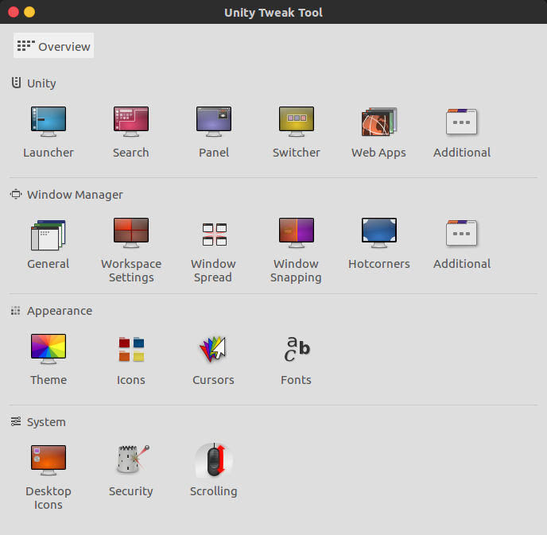
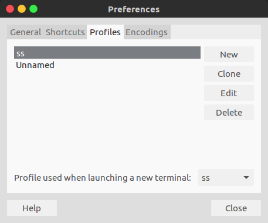

[Ubuntu 16.04]桌面美化¶
参考：
安装unity-tweak-tool¶
sudo apt-get install unity-tweak-tool
unity-tweak-tool是一个unity桌面的设置管理器，它能够提供便捷的桌面设置

安装完成后可从搜索栏找到或命令行输入unity-tweak-tool
对于Ubuntu18.04应该安装gnome-tweak-tool
安装主题和图标¶
Flatabulous主题和Ultra-flat图标¶
sudo add-apt-repository ppa:noobslab/themes
sudo apt-get update
sudo apt-get install flatabulous-theme
sudo add-apt-repository ppa:noobslab/icons
sudo apt-get update
sudo apt-get install ultra-flat-icons
更多主题可取官网下载：Gnome
打开unity-tweak-tool
点击Theme，选择Flatabolous主题
点击Icons，选择Ultra-flat主题
Numix daily主题和Numix图标¶
参考：Ubuntu下使用Unity Tweak Tool 安装Numix图标主题
sudo apt-add-repository ppa:numix/ppa
sudo apt-get update
sudo apt-get install numix-icon-theme-circle
sudo apt-get install numix-gtk-theme
设置命令行窗口¶
打开一个命令行窗口，点击Edit->Preferences，选择Profiles->News，新建一个Profile

选择Colors->Text and Background Color->Use transparent background，拖动滑动条来设置背景透明度
保存该设置后退出，点击菜单栏Terminal->Change Profile，选择新建的profile